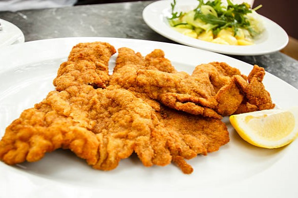

Rántott csirkemell
Miért ez a kedvencem?
Szerintem a rántott csirkemellnél nincs klasszikusabb ebéd Magyarországon. Az az, amit mindenki szeret, talán nem is tudjuk miért. De egy biztos: az a legjobb, amit a saját szüleink csinálnak!
Na de mi is ez valójában?
A rántott csirkemell egy népszerű étel, amelynél a csirkemell szeleteket lisztbe, tojásba, majd zsemlemorzsába forgatják, és forró olajban aranybarnára sütik. Hasonló a bécsi szelethez, amely eredetileg borjúhúsból készül, de hasonló módon panírozva és kisütve, gyakran citrommal és körettel tálalják.

Készítsük el!
Hozzávalók
- 50 dkg csirkemell
- só
- bors
- liszt
- 3 db tojás
- zsemlemorzsa
- olaj (a sütéshez)
Hogyan?
- A csirkemellet alaposan megmossuk, majd felszeleteljük vékonyabb szeletekre. A szeleteket ízlés szerint sózzuk és borsozzuk.
- A lisztet, a felvert tojásokat, és a zsemlemorzsát külön tálakba készítjük elő.
- A csirkemell szeleteket először lisztbe forgatjuk, majd megforgatjuk a felvert tojásban, végül a zsemlemorzsában alaposan meghempergetjük.
- Egy serpenyőben felhevítjük az olajat, és a panírozott csirkemell szeleteket közepes lángon aranybarnára sütjük mindkét oldalukon.
- Amikor elkészültek, papírtörlőre helyezzük a szeleteket, hogy a felesleges olajat felszívja.